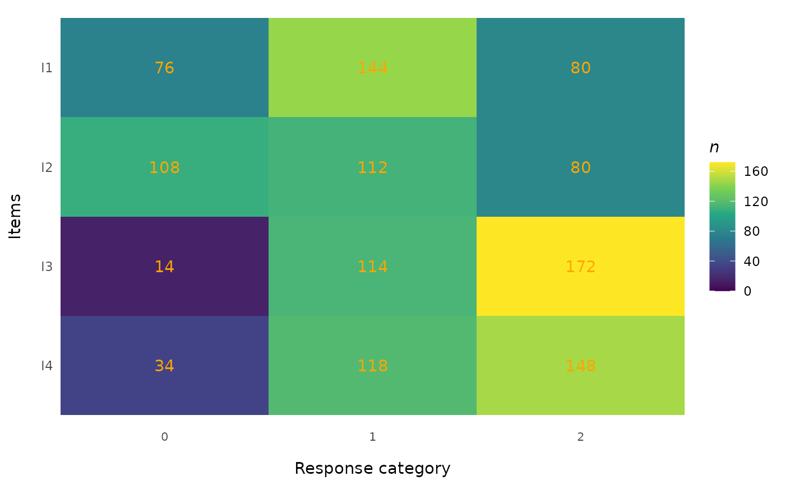
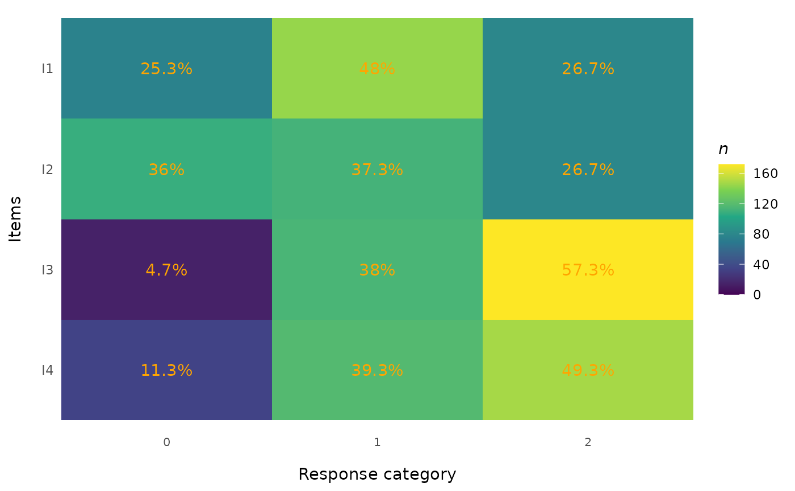
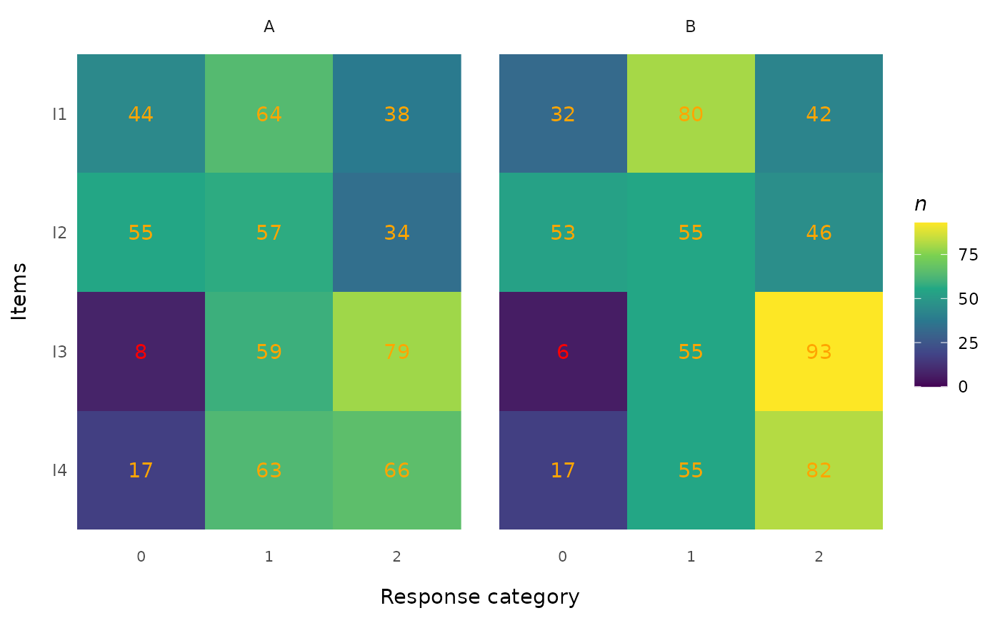

Creates a tile (heat map) plot showing the distribution of responses across all items and response categories. Each cell displays the count (or percentage) of responses, with optional conditional highlighting for cells with low counts. Optional faceting by a grouping variable is provided for inspecting subgroup response distributions before DIF analyses – particularly useful for spotting empty categories or under-represented subgroups before fitting Rasch models per group.
Usage
RMplotTile(
data,
group = NULL,
cutoff = 10,
highlight = TRUE,
percent = FALSE,
text_color = "orange",
item_labels = NULL,
category_labels = NULL,
group_labels = NULL,
facet_ncol = NULL,
output = c("ggplot", "dataframe")
)Arguments
- data
A data.frame in wide format containing only the item response columns. Each column is one item, each row is one person. All columns must be numeric (integer-valued). Response categories may be coded starting from 0 or 1. Do not include person IDs, grouping variables, or other non-item columns – supply the grouping variable separately via
group.- group
Optional vector of length
nrow(data)(factor, character, or numeric) defining a grouping variable. When provided, the plot is faceted by group and counts / percentages are computed within each group. DefaultNULL(no faceting). Persons withNAgroup are excluded.- cutoff
Integer. Cells with counts below this value are highlighted (when
highlight = TRUE). Default10.- highlight
Logical. If
TRUE(default), cell labels with counts belowcutoffare displayed in red. This includes empty cells (n = 0), useful for identifying gaps in the response distribution.- percent
Logical. If
TRUE, cell labels show percentages instead of raw counts. Percentages are computed within item (and within group, whengroupis supplied). DefaultFALSE.- text_color
Character. Colour for non-highlighted cell labels. Default
"orange".- item_labels
Optional character vector of descriptive labels for the items (y-axis), same length as
ncol(data). DefaultNULLuses the column names.- category_labels
Optional character vector of labels for the response categories (x-axis), same length as the number of categories spanning
mintomaxobserved value. DefaultNULLuses the numeric category values.- group_labels
Optional character vector of length
nlevels(as.factor(group))to override the displayed facet labels. Order corresponds tolevels(as.factor(group)).- facet_ncol
Integer or
NULL. Number of columns in the facet grid whengroupis supplied. DefaultNULL(ggplot2 chooses).- output
Character.
"ggplot"(default) returns the plot;"dataframe"returns the underlying per-cell counts (one row per item x category, plus group when supplied).
Details
Adapted from easyRaschBayes::plot_tile() and extended with the
group parameter for faceted display.
Items are placed on the y-axis (in the same order as the columns of
data, top to bottom) and response categories on the x-axis. Cell
shading represents the count of responses (darker = more responses).
Categories with zero responses are explicitly shown (n = 0), which
helps identify gaps in the response distribution – one of the primary
purposes of the plot, especially before DIF analyses where
under-represented categories within a subgroup can break model
fitting on that subgroup.
When group is supplied, percentages and the highlight cutoff are
applied within each group, so a cell labelled "5" in the group-A
facet contains the count for group A only.
Examples
# \donttest{
data("pcmdat2", package = "eRm")
# Basic tile plot
RMplotTile(pcmdat2)

# With percentages
RMplotTile(pcmdat2, percent = TRUE)

# Faceted by an external grouping variable
set.seed(1)
grp <- sample(c("A", "B"), nrow(pcmdat2), replace = TRUE)
RMplotTile(pcmdat2, group = grp)

# With custom labels and tighter cutoff
RMplotTile(pcmdat2,
group = grp,
group_labels = c("Female", "Male"),
cutoff = 5,
facet_ncol = 2)
# Underlying counts as a data.frame
RMplotTile(pcmdat2, group = grp, output = "dataframe")
#> group item item_label category n percentage
#> 1 A I1 I1 0 44 30.1
#> 2 A I1 I1 1 64 43.8
#> 3 A I1 I1 2 38 26.0
#> 4 A I2 I2 0 55 37.7
#> 5 A I2 I2 1 57 39.0
#> 6 A I2 I2 2 34 23.3
#> 7 A I3 I3 0 8 5.5
#> 8 A I3 I3 1 59 40.4
#> 9 A I3 I3 2 79 54.1
#> 10 A I4 I4 0 17 11.6
#> 11 A I4 I4 1 63 43.2
#> 12 A I4 I4 2 66 45.2
#> 13 B I1 I1 0 32 20.8
#> 14 B I1 I1 1 80 51.9
#> 15 B I1 I1 2 42 27.3
#> 16 B I2 I2 0 53 34.4
#> 17 B I2 I2 1 55 35.7
#> 18 B I2 I2 2 46 29.9
#> 19 B I3 I3 0 6 3.9
#> 20 B I3 I3 1 55 35.7
#> 21 B I3 I3 2 93 60.4
#> 22 B I4 I4 0 17 11.0
#> 23 B I4 I4 1 55 35.7
#> 24 B I4 I4 2 82 53.2
# }